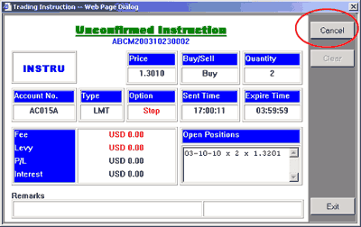
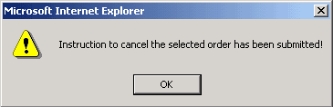

To cancel an unconfirmed instruction
Subject
to the Trading rules of the company, user may be possible to cancel a Limit/Stop,
MOO or MOC order when it is in
Unconfirm
status.
| Please do the following to cancel an Unconfirm order: |

|
When the request is submitted, the order status in the Working Panel will change from Unconfirm to Cancelled if the request has been accepted.
|

|